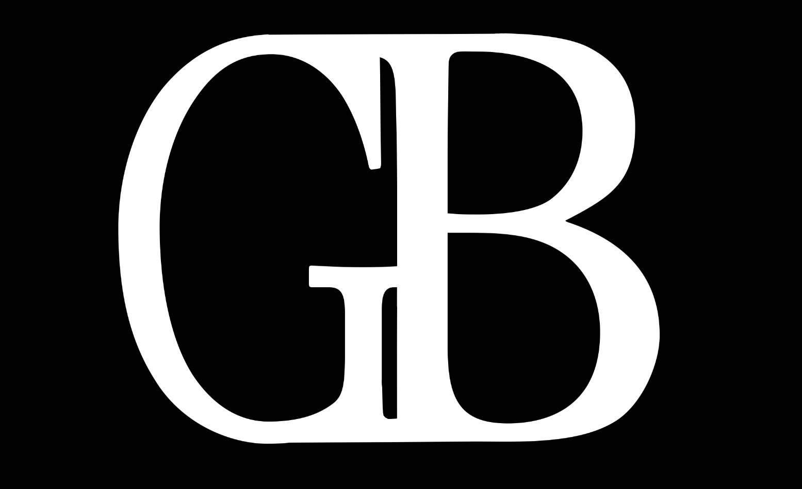

SET TOOLS / DOF
Profondeur de champ

RÉGLAGES
format
mm
f / T
m
REPÈRES PLEIN FORMAT
Équiv. focale Full Frame
—
Même cadre en Full Frame
avec la même focale —
avec la même focale —
PROFONDEUR DE CHAMP
Full Frame
—
—
Limite proche
—
Limite lointaine
—
Devant le point
—
Derrière le point
—
Hyperfocale
—